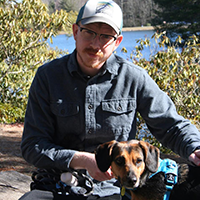
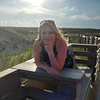
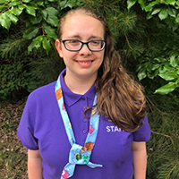

|  |
Ethan CoatesEthan Coates studies Communication: Electronic Media & Broadcasting at Appalachian State University and is transferring to the Univeristy of North Carolina at Greensboro in the Fall of 2021 to pursue Media Studies. Ethan loves technology, video games, computers and multiple forms of media. He also loves to create content and is an avid musician and guitar player. Ethan also loves animals and has a 4 year-old rescue dog named Copper whom he adores. |
|  |
Katelyn JosephKatelyn Joseph is an artist from Northeastern North Carolina and started her art path creating landscape paintings. Joseph is primarily an abstract painter who explores the figure, through motion and dance in lively, colorful ways. She will graduate from Appalachian State University with a BFA in Studio Art and a minor in Graphic Communications Management. She has shown her work locally through group exhibitions such as Bird of Feathers, A Taste of Winter, Dare County Arts Council and at the local community college. Her work has been seen in an art magazine called Estuaries created for artists in the area as well as alumni. She has sold numerous paintings throughout the years and continues to receive commissions. |
|  |
Katie SchwererHello, I'm Katie. I'm a CS major with a GAIT minor. I enjoy anime and American tv-shows. |